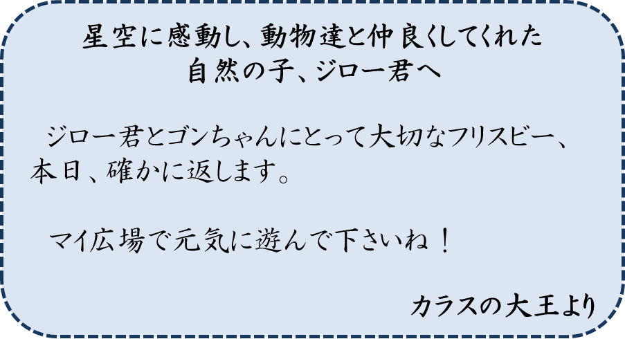
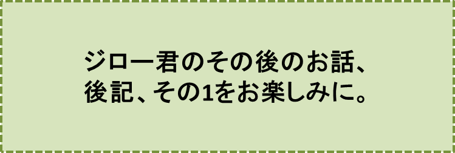

カラスの大王物語-PART11-
『再会』の巻
笠原正雄
翌朝、ジローはいつもより早く、目をさましました。
雨戸を開けると朝日が、“おはよう”とばかりに部屋に入ってきます。
“うぁー、まぶしい”
と、ジローは思わず目をつむります。
庭の緑の葉いっぱいの木々が送ってくれるひんやりした風が、ジローの頬に気持ちよく当ってきます。
庭を見下ろすと、ゴンは早くも、お庭の中をあちら、こちらと元気に動きまわって、朝の散歩としゃれ込んでいます。
“おっはようー！”
とジローは元気いっぱい、声をかけます。ゴンも
“うわん！”
と鳴いて、きっちり、朝の挨拶を返します。
このとき、ゴンが突然、上空を見上げました。ちょっぴり首をかしげ、とても真剣な眼差しです。
あっ、あっ、何でしょう。幾つもの白い雲をぽっかり浮かべた青空をバックに、黒っぽいチョウのような物体がヒラヒラと舞い降りてきます。
ゴンは首をかしげ身じろぎもせず大空を見上げたままです。
黒いチョウはゆっくり舞いながら、こちらに向かって飛んできます。
はっきりと形が見えました。チョウではありません。
カラスの羽が舞い降りてくるのです。羽の先、羽柄にはピカピカ光るペン先のようなものが、ついています。
“カラスの羽ペン？飛行機から落ちてきたのかな？我が家の庭に舞い降りてこないかなぁ”
こんな願いを込めて、ジローの目は、カラスの羽ペンを追跡します。
「カラスの大きな羽ペンだ。やっぱり」
と小さく叫んだ瞬間、チョウのようにゆっくり、ゆっくり舞っていた羽ペンは、目の前で急にスピードを上げ、まさに矢の勢い、目にもとまらぬ速さで勉強部屋に飛び込んできました。そして天井を、まるで小鳥のようにグルグル、グルグル回ります。……このとき、
“あっ、どうして！？”
と、ジローは小さく声を上げて叫びました。
昨夜、全く目にすることができなかったフリスビーが、本立てにはさまれて、しっかり立っているではありませんか。
ジローは凍りついたように見つめたままです。窓ごしの朝日が優しくフリスビーに当っています。お帰りなさい！と言うように優しく当っています。
マイ広場で、気流に乗って遥か森の方へと消えていったはずのジローとゴンのフリスビーが、今、机の上に何ごともなかったように舞い戻っています……。不思議なことです。
“どうして！？”
ジローにとって、全く信じ難いフリスビーとの嬉しい再会です。
このときを待っていたのでしょう。天井をグルグル回っていたカラスの羽ペンが、ゆっくり舞いながらフリスビーに向って近づいていきます。そして、誰かの手に、しっかり持たれているような筆運びで、フリスビーに文字を記し始めます。ピカピカに輝く黄金のペンが朝日を浴びてキラキラ光ります。ジローは立ちつくしたままです。
カラスの羽ペンは文字を記し終わると、フリスビーを離れ、床の上にゆっくり舞い降りました。
床に視線を落としたジローの目に映ったもの、それはピッカピカの黄金のペン先がついた羽ペンではなく、ごく普通のカラスの黒い羽です。
“きっと、このカラスの羽は、僕とゴンだけの大切な記念品になるだろうな。勿論、他の人には普通のカラスの羽に過ぎないだろうけれどね”
ジローは床から羽をそっと拾い上げ、大切に机の引き出しの中にしまいます。
フリスビーには、どんな文字が残されているのでしょう。早速、読んでみることにしましょう！
フリスビーには、以下のような文章が記されています……。

――― 完 ―――
♪♪♪♪コーヒーブレイク♪♪♪♪
